The arctic fox, a complex animal that has adapted to its environment, illustrates the relationships between an animal's form and function. The multicellular bodies of animals consist of tissues that make up more complex organs and organ systems. The organ systems of an animal maintain homeostasis within the multicellular body. These systems are adapted to obtain the necessary nutrients and other resources needed by the cells of the body, to remove the wastes those cells produce, to coordinate the activities of the cells, tissues, and organs throughout the body, and to coordinate the many responses of the individual organism to its environment.
- 16.1 Homeostasis and Osmoregulation
- Explain the concept of homeostasis
- Describe thermoregulation of endothermic and ectothermic animals
- Explain how the kidneys serve as the main osmoregulatory organs in the human body
- 16.2 Digestive System
- Explain the processes of digestion and absorption
- Explain the specialized functions of the organs involved in processing food in the body
- Describe the ways in which organs work together to digest food and absorb nutrients
- Describe the essential nutrients required for cellular function that cannot be synthesized by the animal body
- Describe how excess carbohydrates and energy are stored in the body
- 16.3 Circulatory and Respiratory Systems
- Describe the passage of air from the outside environment to the lungs
- Describe the function of the circulatory system
- Describe the cardiac cycle
- Explain how blood flows through the body
- 16.4 Endocrine System
- List the different types of hormones and explain their roles in maintaining homeostasis
- Explain how hormones work
- Explain how hormone production is regulated
- Describe the role of different glands in the endocrine system
- Explain how the different glands work together to maintain homeostasis
- 16.5 Musculoskeletal System
- Describe the roles of the skeletal and muscular systems
- Discuss the role of joints in skeletal movement
- Explain the role of muscles in locomotion
- 16.6 Nervous System
- Describe the organization of the nervous system
- Explain the function of neurons
- Describe the parts of the brain and their roles
| # | Lesson | Key Concepts | Source |
|---|---|---|---|
| 1 | Homeostasis and Osmoregulation | Homeostasis, set point, negative feedback, thermoregulation, endotherms, ectotherms, osmoregulation, excretory system, kidneys, nephrons, glomerulus, filtration, reabsorption | CB 16.1 |
| 2 | Digestive System | Digestion, absorption, oral cavity, esophagus, stomach, small intestine (duodenum, jejunum, ileum), large intestine, accessory organs (liver, gallbladder, pancreas), nutrition, essential nutrients | CB 16.2 |
| 3 | Circulatory and Respiratory Systems | Respiratory system, nasal cavity, trachea, bronchi, alveoli, gas exchange, circulatory system, heart chambers, cardiac cycle, systole, diastole, blood vessels, arteries, veins, capillaries | CB 16.3 |
| 4 | Endocrine System | Hormones, endocrine glands, pituitary, thyroid, parathyroid, adrenal, pancreas, gonads, hormone receptors, up-regulation, down-regulation | CB 16.4 |
| 5 | Musculoskeletal System | Skeletal system, axial and appendicular skeleton, bone types, joints, muscular system, skeletal muscle, smooth muscle, cardiac muscle | CB 16.5 |
| 6 | Nervous System | Neurons, central nervous system, peripheral nervous system, brain, spinal cord, neurotransmitters, synapses | CB 16.6 |
| 7 | Practice Test | All topics — comprehensive assessment | All |
| Standard | Description | Lessons |
|---|---|---|
| BIO.4a | Investigating and understanding how organisms maintain homeostasis | 1, 2, 3, 4, 5, 6 |
| BIO.4b | Understanding the role of the nervous and endocrine systems in body regulation | 1, 4, 6 |
| BIO.4c | Understanding how organ systems interact to maintain homeostasis | 1, 2, 3, 4, 5, 6 |
- Explain the concept of homeostasis
- Describe thermoregulation of endothermic and ectothermic animals
- Explain how the kidneys serve as the main osmoregulatory organs in the human body
Homeostasis refers to the relatively stable state inside the body of an animal. Animal organs and organ systems constantly adjust to internal and external changes in order to maintain this steady state. Examples of internal conditions maintained homeostatically are the level of blood glucose, body temperature, blood calcium level. These conditions remain stable because of physiologic processes that result in negative feedback relationships. If the blood glucose or calcium rises, this sends a signal to organs responsible for lowering blood glucose or calcium. The signals that restore the normal levels are examples of negative feedback. When homeostatic mechanisms fail, the results can be unfavorable for the animal. Homeostatic mechanisms keep the body in dynamic equilibrium by constantly adjusting to the changes that the body's systems encounter. Even an animal that is apparently inactive is maintaining this homeostatic equilibrium. Two examples of factors that are regulated homeostatically are temperature and water content. The processes that maintain homeostasis of these two factors are called thermoregulation and osmoregulation.
The goal of homeostasis is the maintenance of equilibrium around a specific value of some aspect of the body or its cells called a set point. While there are normal fluctuations from the set point, the body's systems will usually attempt to go back to this point. A change in the internal or external environment is called a stimulus and is detected by a receptor; the response of the system is to adjust the activities of the system so the value moves back toward the set point. For instance, if the body becomes too warm, adjustments are made to cool the animal. If glucose levels in the blood rise after a meal, adjustments are made to lower them and to get the nutrient into tissues that need it or to store it for later use.
When a change occurs in an animal's environment, an adjustment must be made so that the internal environment of the body and cells remains stable. The receptor that senses the change in the environment is part of a feedback mechanism. The stimulus—temperature, glucose, or calcium levels—is detected by the receptor. The receptor sends information to a control center, often the brain, which relays appropriate signals to an effector organ that is able to cause an appropriate change, either up or down, depending on the information the sensor was sending.
Animals can be divided into two groups: those that maintain a constant body temperature in the face of differing environmental temperatures, and those that have a body temperature that is the same as their environment and thus varies with the environmental temperature. Animals that do not have internal control of their body temperature are called ectotherms. The body temperature of these organisms is generally similar to the temperature of the environment, although the individual organisms may do things that keep their bodies slightly below or above the environmental temperature. This can include burrowing underground on a hot day or resting in the sunlight on a cold day. The ectotherms have been called cold-blooded, a term that may not apply to an animal in the desert with a very warm body temperature.
An animal that maintains a constant body temperature in the face of environmental changes is called an endotherm. These animals are able to maintain a level of activity that an ectothermic animal cannot because they generate internal heat that keeps their cellular processes operating optimally even when the environment is cold.
Animals conserve or dissipate heat in a variety of ways. Endothermic animals have some form of insulation. They have fur, fat, or feathers. Animals with thick fur or feathers create an insulating layer of air between their skin and internal organs. Polar bears and seals live and swim in a subfreezing environment and yet maintain a constant, warm, body temperature. The arctic fox, for example, uses its fluffy tail as extra insulation when it curls up to sleep in cold weather. Mammals can increase body heat production by shivering, which is an involuntary increase in muscle activity. In addition, arrector pili muscles can contract causing individual hairs to stand up when the individual is cold. This increases the insulating effect of the hair. Humans retain this reaction, which does not have the intended effect on our relatively hairless bodies; it causes "goose bumps" instead. Mammals use layers of fat as insulation also. Loss of significant amounts of body fat will compromise an individual's ability to conserve heat.
Ectotherms and endotherms use their circulatory systems to help maintain body temperature. Vasodilation, the opening up of arteries to the skin by relaxation of their smooth muscles, brings more blood and heat to the body surface, facilitating radiation and evaporative heat loss, cooling the body. Vasoconstriction, the narrowing of blood vessels to the skin by contraction of their smooth muscles, reduces blood flow in peripheral blood vessels, forcing blood toward the core and vital organs, conserving heat. Some animals have adaptions to their circulatory system that enable them to transfer heat from arteries to veins that are flowing next to each other, warming blood returning to the heart. This is called a countercurrent heat exchange; it prevents the cold venous blood from cooling the heart and other internal organs. The countercurrent adaptation is found in dolphins, sharks, bony fish, bees, and hummingbirds.
Some ectothermic animals use changes in their behavior to help regulate body temperature. They simply seek cooler areas during the hottest part of the day in the desert to keep from getting too warm. The same animals may climb onto rocks in the evening to capture heat on a cold desert night before entering their burrows.
Thermoregulation is coordinated by the nervous system (Figure 16.2). The processes of temperature control are centered in the hypothalamus of the advanced animal brain. The hypothalamus maintains the set point for body temperature through reflexes that cause vasodilation or vasoconstriction and shivering or sweating. The sympathetic nervous system under control of the hypothalamus directs the responses that effect the changes in temperature loss or gain that return the body to the set point. The set point may be adjusted in some instances. During an infection, compounds called pyrogens are produced and circulate to the hypothalamus resetting the thermostat to a higher value. This allows the body's temperature to increase to a new homeostatic equilibrium point in what is commonly called a fever. The increase in body heat makes the body less optimal for bacterial growth and increases the activities of cells so they are better able to fight the infection.
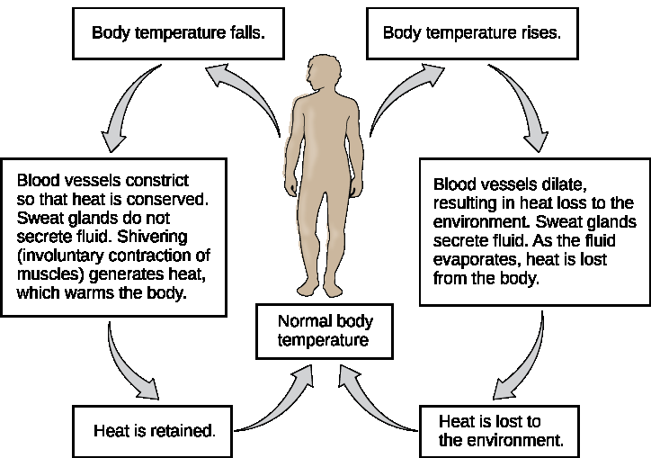
Osmoregulation is the process of maintaining salt and water balance (osmotic balance) across membranes within the body. The fluids inside and surrounding cells are composed of water, electrolytes, and nonelectrolytes. An electrolyte is a compound that dissociates into ions when dissolved in water. A nonelectrolyte, in contrast, does not dissociate into ions in water. The body's fluids include blood plasma, fluid that exists within cells, and the interstitial fluid that exists in the spaces between cells and tissues of the body. The membranes of the body (both the membranes around cells and the "membranes" made of cells lining body cavities) are semipermeable membranes. Semipermeable membranes are permeable to certain types of solutes and to water, but typically cell membranes are impermeable to solutes.
The body does not exist in isolation. There is a constant input of water and electrolytes into the system. Excess water, electrolytes, and wastes are transported to the kidneys and excreted, helping to maintain osmotic balance. Insufficient fluid intake results in fluid conservation by the kidneys. Biological systems constantly interact and exchange water and nutrients with the environment by way of consumption of food and water and through excretion in the form of sweat, urine, and feces. Without a mechanism to regulate osmotic pressure, or when a disease damages this mechanism, there is a tendency to accumulate toxic waste and water, which can have dire consequences.
Mammalian systems have evolved to regulate not only the overall osmotic pressure across membranes, but also specific concentrations of important electrolytes in the three major fluid compartments: blood plasma, interstitial fluid, and intracellular fluid. Since osmotic pressure is regulated by the movement of water across membranes, the volume of the fluid compartments can also change temporarily. Since blood plasma is one of the fluid components, osmotic pressures have a direct bearing on blood pressure.
The human excretory system functions to remove waste from the body through the skin as sweat, the lungs in the form of exhaled carbon dioxide, and through the urinary system in the form of urine. All three of these systems participate in osmoregulation and waste removal. Here we focus on the urinary system, which is comprised of the paired kidneys, the ureter, urinary bladder and urethra (Figure 16.3). The kidneys are a pair of bean-shaped structures that are located just below the liver in the body cavity. Each of the kidneys contains more than a million tiny units called nephrons that filter blood containing the metabolic wastes from cells. All the blood in the human body is filtered about 60 times a day by the kidneys. The nephrons remove wastes, concentrate them, and form urine that is collected in the bladder.
Internally, the kidney has three regions—an outer cortex, a medulla in the middle, and the renal pelvis, which is the expanded end of the ureter. The renal cortex contains the nephrons—the functional unit of the kidney. The renal pelvis collects the urine and leads to the ureter on the outside of the kidney. The ureters are urine-bearing tubes that exit the kidney and empty into the urinary bladder.
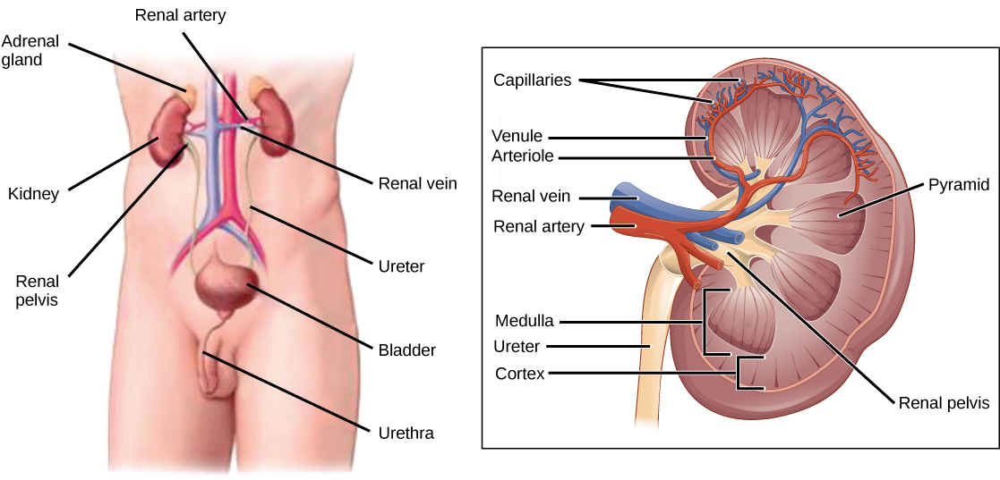
Blood enters each kidney from the aorta, the main artery supplying the body below the heart, through a renal artery. It is distributed in smaller vessels until it reaches each nephron in capillaries. Within the nephron the blood comes in intimate contact with the waste-collecting tubules in a structure called the glomerulus. Water and many solutes present in the blood, including ions of sodium, calcium, magnesium, and others; as well as wastes and valuable substances such as amino acids, glucose and vitamins, leave the blood and enter the tubule system of the nephron. As materials pass through the tubule much of the water, required ions, and useful compounds are reabsorbed back into the capillaries that surround the tubules leaving the wastes behind. Some of this reabsorption requires active transport and consumes ATP. Some wastes, including ions and some drugs remaining in the blood, diffuse out of the capillaries into the interstitial fluid and are taken up by the tubule cells. These wastes are then actively secreted into the tubules. The blood then collects in larger and larger vessels and leaves the kidney in the renal vein. The renal vein joins the inferior vena cava, the main vein that returns blood to the heart from the lower body. The amounts of water and ions reabsorbed into the circulatory system are carefully regulated and this is an important way the body regulates its water content and ion levels. The waste is collected in larger tubules and then leaves the kidney in the ureter, which leads to the bladder where urine, the combination of waste materials and water, is stored.
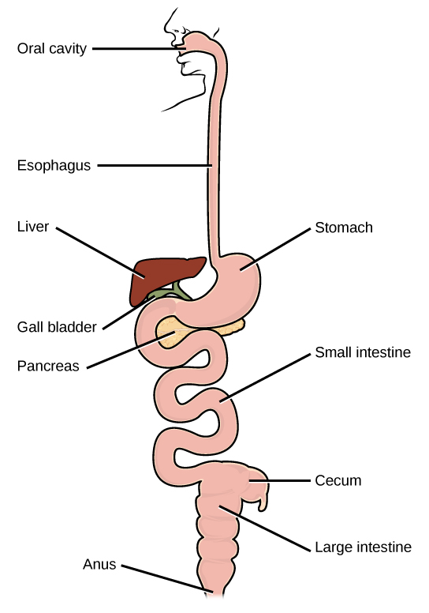
The bladder contains sensory nerves, stretch receptors that signal when it needs to be emptied. These signals create the urge to urinate, which can be voluntarily suppressed up to a limit. The conscious decision to urinate sets in play signals that open the sphincters, rings of smooth muscle that close off the opening, to the urethra that allows urine to flow out of the bladder and the body.
Dialysis is a medical process of removing wastes and excess water from the blood by diffusion and ultrafiltration. When kidney function fails, dialysis must be done to artificially rid the body of wastes and fluids. This is a vital process to keep patients alive. In some cases, the patients undergo artificial dialysis until they are eligible for a kidney transplant. In others who are not candidates for kidney transplants, dialysis is a lifelong necessity.
Dialysis technicians typically work in hospitals and clinics. While some roles in this field include equipment development and maintenance, most dialysis technicians work in direct patient care. Their on-the-job duties, which typically occur under the direct supervision of a registered nurse, focus on providing dialysis treatments. This can include reviewing patient history and current condition, assessing and responding to patient needs before and during treatment, and monitoring the dialysis process. Treatment may include taking and reporting a patient's vital signs, preparing solutions and equipment to ensure accurate and sterile procedures.
Explain the concept of homeostasis and negative feedback. Compare thermoregulation strategies in ectotherms and endotherms, including vasodilation and vasoconstriction. Then describe how the kidneys and nephrons function to maintain osmotic balance in the body.
- Explain the processes of digestion and absorption
- Explain the specialized functions of the organs involved in processing food in the body
- Describe the ways in which organs work together to digest food and absorb nutrients
- Describe the essential nutrients required for cellular function that cannot be synthesized by the animal body
- Describe how excess carbohydrates and energy are stored in the body
All living organisms need nutrients to survive. While plants can obtain nutrients from their roots and the energy molecules required for cellular function through the process of photosynthesis, animals obtain their nutrients by the consumption of other organisms. At the cellular level, the biological molecules necessary for animal function are amino acids, lipid molecules, nucleotides, and simple sugars. However, the food consumed consists of protein, fat, and complex carbohydrates. Animals must convert these macromolecules into the simple molecules required for maintaining cellular function. The conversion of the food consumed to the nutrients required is a multistep process involving digestion and absorption. During digestion, food particles are broken down to smaller components, which are later absorbed by the body. This happens by both physical means, such as chewing, and by chemical means.
One of the challenges in human nutrition is maintaining a balance between food intake, storage, and energy expenditure. Taking in more food energy than is used in activity leads to storage of the excess in the form of fat deposits. The rise in obesity and the resulting diseases like type 2 diabetes makes understanding the role of diet and nutrition in maintaining good health all the more important.
The process of digestion begins in the mouth with the intake of food (Figure 16.4). The teeth play an important role in masticating (chewing) or physically breaking food into smaller particles. The enzymes present in saliva also begin to chemically break down food. The food is then swallowed and enters the esophagus—a long tube that connects the mouth to the stomach. Using peristalsis, or wave-like smooth-muscle contractions, the muscles of the esophagus push the food toward the stomach. The stomach contents are extremely acidic, with a pH between 1.5 and 2.5. This acidity kills microorganisms, breaks down food tissues, and activates digestive enzymes. Further breakdown of food takes place in the small intestine where bile produced by the liver, and enzymes produced by the small intestine and the pancreas, continue the process of digestion. The smaller molecules are absorbed into the blood stream through the epithelial cells lining the walls of the small intestine. The waste material travels on to the large intestine where water is absorbed and the drier waste material is compacted into feces; it is stored until it is excreted through the anus.
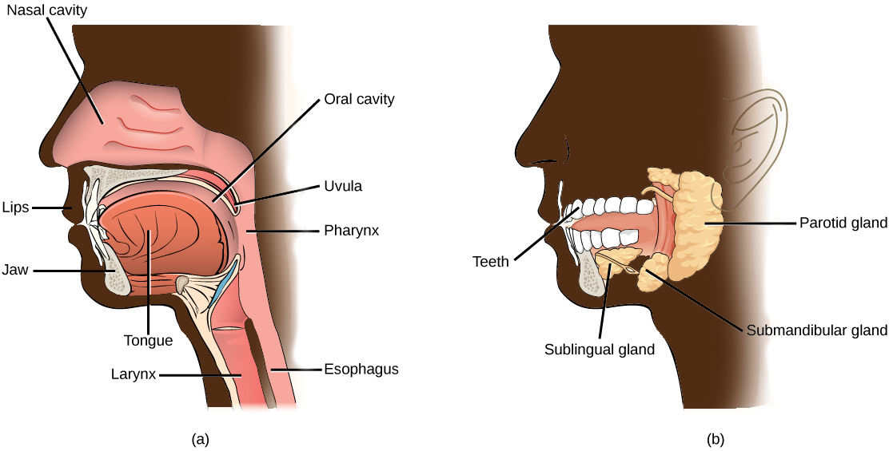
Both physical and chemical digestion begin in the mouth or oral cavity, which is the point of entry of food into the digestive system. The food is broken into smaller particles by mastication, the chewing action of the teeth. All mammals have teeth and can chew their food to begin the process of physically breaking it down into smaller particles.
The chemical process of digestion begins during chewing as food mixes with saliva, produced by the salivary glands (Figure 16.5). Saliva contains mucus that moistens food and buffers the pH of the food. Saliva also contains lysozyme, which has antibacterial action. It also contains an enzyme called salivary amylase that begins the process of converting starches in the food into a disaccharide called maltose. Another enzyme called lipase is produced by cells in the tongue to break down fats. The chewing and wetting action provided by the teeth and saliva prepare the food into a mass called the bolus for swallowing. The tongue helps in swallowing—moving the bolus from the mouth into the pharynx. The pharynx opens to two passageways: the esophagus and the trachea. The esophagus leads to the stomach and the trachea leads to the lungs. The epiglottis is a flap of tissue that covers the tracheal opening during swallowing to prevent food from entering the lungs.
The esophagus is a tubular organ that connects the mouth to the stomach. The chewed and softened food passes through the esophagus after being swallowed. The smooth muscles of the esophagus undergo peristalsis that pushes the food toward the stomach. The peristaltic wave is unidirectional—it moves food from the mouth the stomach, and reverse movement is not possible, except in the case of the vomit reflex. The peristaltic movement of the esophagus is an involuntary reflex; it takes place in response to the act of swallowing.
Ring-like muscles called sphincters form valves in the digestive system. The gastro-esophageal sphincter (or cardiac sphincter) is located at the stomach end of the esophagus. In response to swallowing and the pressure exerted by the bolus of food, this sphincter opens, and the bolus enters the stomach. When there is no swallowing action, this sphincter is shut and prevents the contents of the stomach from traveling up the esophagus. Acid reflux or "heartburn" occurs when the acidic digestive juices escape into the esophagus.
A large part of protein digestion occurs in the stomach (Figure 16.7). The stomach is a saclike organ that secretes gastric digestive juices.
Protein digestion is carried out by an enzyme called pepsin in the stomach chamber. The highly acidic environment kills many microorganisms in the food and, combined with the action of the enzyme pepsin, results in the catabolism of protein in the food. Chemical digestion is facilitated by the churning action of the stomach caused by contraction and relaxation of smooth muscles. The partially digested food and gastric juice mixture is called chyme. Gastric emptying occurs within two to six hours after a meal. Only a small amount of chyme is released into the small intestine at a time. The movement of chyme from the stomach into the small intestine is regulated by hormones, stomach distension and muscular reflexes that influence the pyloric sphincter.
The stomach lining is unaffected by pepsin and the acidity because pepsin is released in an inactive form and the stomach has a thick mucus lining that protects the underlying tissue.
Chyme moves from the stomach to the small intestine. The small intestine is the organ where the digestion of protein, fats, and carbohydrates is completed. The small intestine is a long tube-like organ with a highly folded surface containing finger-like projections called the villi. The top surface of each villus has many microscopic projections called microvilli. The epithelial cells of these structures absorb nutrients from the digested food and release them to the bloodstream on the other side. The villi and microvilli, with their many folds, increase the surface area of the small intestine and increase absorption efficiency of the nutrients.
The human small intestine is over 6 m (19.6 ft) long and is divided into three parts: the duodenum, the jejunum and the ileum. The duodenum is separated from the stomach by the pyloric sphincter. The chyme is mixed with pancreatic juices, an alkaline solution rich in bicarbonate that neutralizes the acidity of chyme from the stomach. Pancreatic juices contain several digestive enzymes that break down starches, disaccharides, proteins, and fats. Bile is produced in the liver and stored and concentrated in the gallbladder; it enters the duodenum through the bile duct. Bile contains bile salts, which make lipids accessible to the water-soluble enzymes. The monosaccharides, amino acids, bile salts, vitamins, and other nutrients are absorbed by the cells of the intestinal lining.
The undigested food is sent to the colon from the ileum via peristaltic movements. The ileum ends and the large intestine begins at the ileocecal valve. The vermiform, "worm-like," appendix is located at the ileocecal valve. The appendix of humans has a minor role in immunity.
The large intestine reabsorbs the water from indigestible food material and processes the waste material (Figure 16.6). The human large intestine is much smaller in length compared to the small intestine but larger in diameter. It has three parts: the cecum, the colon, and the rectum. The cecum joins the ileum to the colon and is the receiving pouch for the waste matter. The colon is home to many bacteria or "intestinal flora" that aid in the digestive processes. The colon has four regions, the ascending colon, the transverse colon, the descending colon and the sigmoid colon. The main functions of the colon are to extract the water and mineral salts from undigested food, and to store waste material.
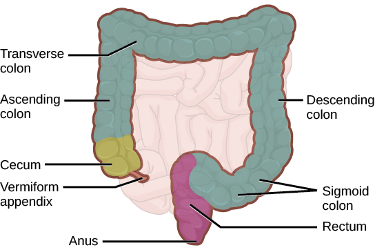
The rectum (Figure 16.6) stores feces until defecation. The feces are propelled using peristaltic movements during elimination. The anus is an opening at the far-end of the digestive tract and is the exit point for the waste material. Two sphincters regulate the exit of feces, the inner sphincter is involuntary and the outer sphincter is voluntary.
The organs discussed above are the organs of the digestive tract through which food passes. Accessory organs add secretions and enzymes that break down food into nutrients. Accessory organs include the salivary glands, the liver, the pancreas, and the gall bladder. The secretions of the liver, pancreas, and gallbladder are regulated by hormones in response to food consumption.
The liver is the largest internal organ in humans and it plays an important role in digestion of fats and detoxifying blood. The liver produces bile, a digestive juice that is required for the breakdown of fats in the duodenum. The liver also processes the absorbed vitamins and fatty acids and synthesizes many plasma proteins. The gallbladder is a small organ that aids the liver by storing bile and concentrating bile salts.
The pancreas secretes bicarbonate that neutralizes the acidic chyme and a variety of enzymes for the digestion of protein and carbohydrates.
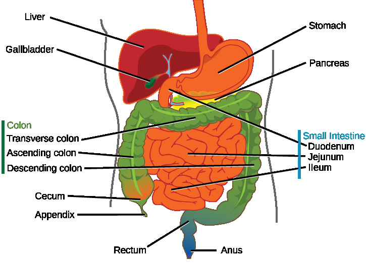
The organic molecules required for building cellular material and tissues must come from food. During digestion, digestible carbohydrates are ultimately broken down into glucose and used to provide energy within the cells of the body. Complex carbohydrates, including polysaccharides, can be broken down into glucose through biochemical modification; however, humans do not produce the enzyme necessary to digest cellulose (fiber). The intestinal flora in the human gut are able to extract some nutrition from these plant fibers. These plant fibers are known as dietary fiber and are an important component of the diet. The excess sugars in the body are converted into glycogen and stored for later use in the liver and muscle tissue. Glycogen stores are used to fuel prolonged exertions, such as long-distance running, and to provide energy during food shortage. Fats are stored under the skin of mammals for insulation and energy reserves.
Proteins in food are broken down during digestion and the resulting amino acids are absorbed. All of the proteins in the body must be formed from these amino-acid constituents; no proteins are obtained directly from food.
Fats add flavor to food and promote a sense of satiety or fullness. Fatty foods are also significant sources of energy, and fatty acids are required for the construction of lipid membranes. Fats are also required in the diet to aid the absorption of fat-soluble vitamins and the production of fat-soluble hormones.
While the animal body can synthesize many of the molecules required for function from precursors, there are some nutrients that must be obtained from food. These nutrients are termed essential nutrients, meaning they must be eaten, because the body cannot produce them.
The fatty acids omega-3 alpha-linolenic acid and omega-6 linoleic acid are essential fatty acids needed to make some membrane phospholipids. Vitamins are another class of essential organic molecules that are required in small quantities. Many of these assist enzymes in their function and, for this reason, are called coenzymes. Absence or low levels of vitamins can have a dramatic effect on health. Minerals are another set of inorganic essential nutrients that must be obtained from food. Minerals perform many functions, from muscle and nerve function, to acting as enzyme cofactors. Certain amino acids also must be procured from food and cannot be synthesized by the body. These amino acids are the "essential" amino acids. The human body can synthesize only 11 of the 20 required amino acids; the rest must be obtained from food.
Trace the path of food through the digestive system from the oral cavity to the anus, describing the role of each major organ. Include the functions of accessory organs (liver, gallbladder, pancreas) and explain the importance of villi and microvilli in nutrient absorption.
- Describe the passage of air from the outside environment to the lungs
- Describe the function of the circulatory system
- Describe the cardiac cycle
- Explain how blood flows through the body
Animals are complex multicellular organisms that require a mechanism for transporting nutrients throughout their bodies and removing wastes. The human circulatory system has a complex network of blood vessels that reach all parts of the body. This extensive network supplies the cells, tissues, and organs with oxygen and nutrients, and removes carbon dioxide and waste compounds.
The medium for transport of gases and other molecules is the blood, which continually circulates through the system. Pressure differences within the system cause the movement of the blood and are created by the pumping of the heart.
Gas exchange between tissues and the blood is an essential function of the circulatory system. In humans, other mammals, and birds, blood absorbs oxygen and releases carbon dioxide in the lungs. Thus the circulatory and respiratory system, whose function is to obtain oxygen and discharge carbon dioxide, work in tandem.
Take a breath in and hold it. Wait several seconds and then let it out. Humans, when they are not exerting themselves, breathe approximately 15 times per minute on average. This equates to about 900 breaths an hour or 21,600 breaths per day. With every inhalation, air fills the lungs, and with every exhalation, it rushes back out. That air is doing more than just inflating and deflating the lungs in the chest cavity. The air contains oxygen that crosses the lung tissue, enters the bloodstream, and travels to organs and tissues. There, oxygen is exchanged for carbon dioxide, which is a cellular waste material. Carbon dioxide exits the cells, enters the bloodstream, travels back to the lungs, and is expired out of the body during exhalation.
Breathing is both a voluntary and an involuntary event. How often a breath is taken and how much air is inhaled or exhaled is regulated by the respiratory center in the brain in response to signals it receives about the carbon dioxide content of the blood. However, it is possible to override this automatic regulation for activities such as speaking, singing and swimming under water.
During inhalation the diaphragm descends creating a negative pressure around the lungs and they begin to inflate, drawing in air from outside the body. The air enters the body through the nasal cavity located just inside the nose (Figure 16.9). As the air passes through the nasal cavity, the air is warmed to body temperature and humidified by moisture from mucous membranes. These processes help equilibrate the air to the body conditions, reducing any damage that cold, dry air can cause. Particulate matter that is floating in the air is removed in the nasal passages by hairs, mucus, and cilia. Air is also chemically sampled by the sense of smell.
From the nasal cavity, air passes through the pharynx (throat) and the larynx (voice box) as it makes its way to the trachea (Figure 16.9). The main function of the trachea is to funnel the inhaled air to the lungs and the exhaled air back out of the body. The human trachea is a cylinder, about 25 to 30 cm (9.8–11.8 in) long, which sits in front of the esophagus and extends from the pharynx into the chest cavity to the lungs. It is made of incomplete rings of cartilage and smooth muscle. The cartilage provides strength and support to the trachea to keep the passage open. The trachea is lined with cells that have cilia and secrete mucus. The mucus catches particles that have been inhaled, and the cilia move the particles toward the pharynx.
The end of the trachea divides into two bronchi that enter the right and left lung. Air enters the lungs through the primary bronchi. The primary bronchus divides, creating smaller and smaller diameter bronchi until the passages are under 1 mm (.03 in) in diameter when they are called bronchioles as they split and spread through the lung. Like the trachea, the bronchus and bronchioles are made of cartilage and smooth muscle. Bronchi are innervated by nerves of both the parasympathetic and sympathetic nervous systems that control muscle contraction (parasympathetic) or relaxation (sympathetic) in the bronchi and bronchioles, depending on the nervous system's cues. The final bronchioles are the respiratory bronchioles. Alveolar ducts are attached to the end of each respiratory bronchiole. At the end of each duct are alveolar sacs, each containing 20 to 30 alveoli. Gas exchange occurs only in the alveoli. The alveoli are thin-walled and look like tiny bubbles within the sacs. The alveoli are in direct contact with capillaries of the circulatory system. Such intimate contact ensures that oxygen will diffuse from the alveoli into the blood. In addition, carbon dioxide will diffuse from the blood into the alveoli to be exhaled. The anatomical arrangement of capillaries and alveoli emphasizes the structural and functional relationship of the respiratory and circulatory systems. Estimates for the surface area of alveoli in the lungs vary around 100 m2. This large area is about the area of half a tennis court. This large surface area, combined with the thin-walled nature of the alveolar cells, allows gases to easily diffuse across the cells.
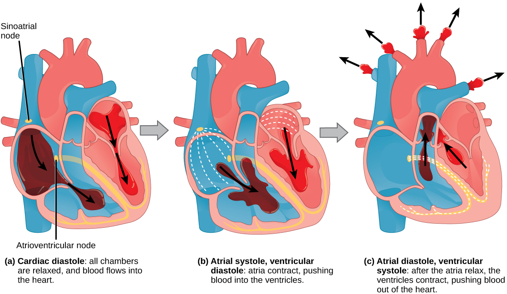
The circulatory system is a network of vessels—the arteries, veins, and capillaries—and a pump, the heart. In all vertebrate organisms this is a closed-loop system, in which the blood is largely separated from the body's other extracellular fluid compartment, the interstitial fluid, which is the fluid bathing the cells. Blood circulates inside blood vessels and circulates unidirectionally from the heart around one of two circulatory routes, then returns to the heart again; this is a closed circulatory system. Open circulatory systems are found in invertebrate animals in which the circulatory fluid bathes the internal organs directly even though it may be moved about with a pumping heart.
The heart is a complex muscle that consists of two pumps: one that pumps blood through pulmonary circulation to the lungs, and the other that pumps blood through systemic circulation to the rest of the body's tissues (and the heart itself).
The heart is asymmetrical, with the left side being larger than the right side, correlating with the different sizes of the pulmonary and systemic circuits (Figure 16.10). In humans, the heart is about the size of a clenched fist; it is divided into four chambers: two atria and two ventricles. There is one atrium and one ventricle on the right side and one atrium and one ventricle on the left side. The right atrium receives deoxygenated blood from the systemic circulation through the major veins: the superior vena cava, which drains blood from the head and from the veins that come from the arms, as well as the inferior vena cava, which drains blood from the veins that come from the lower organs and the legs. This deoxygenated blood then passes to the right ventricle through the tricuspid valve, which prevents the backflow of blood. After it is filled, the right ventricle contracts, pumping the blood to the lungs for reoxygenation. The left atrium receives the oxygen-rich blood from the lungs. This blood passes through the bicuspid valve to the left ventricle where the blood is pumped into the aorta. The aorta is the major artery of the body, taking oxygenated blood to the organs and muscles of the body. This pattern of pumping is referred to as double circulation and is found in all mammals. (Figure 16.10).
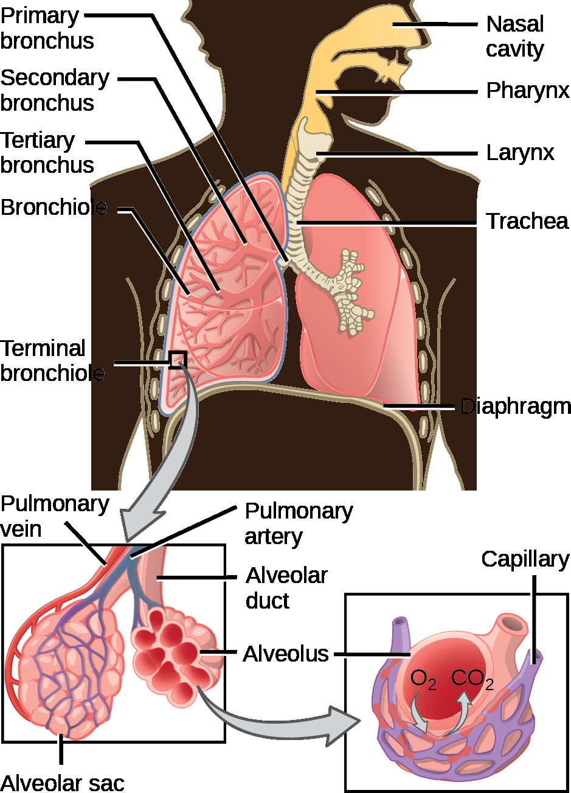
The main purpose of the heart is to pump blood through the body; it does so in a repeating sequence called the cardiac cycle. The cardiac cycle is the flow of blood through the heart coordinated by electrochemical signals that cause the heart muscle to contract and relax. In each cardiac cycle, a sequence of contractions pushes out the blood, pumping it through the body; this is followed by a relaxation phase, where the heart fills with blood. These two phases are called the systole (contraction) and diastole (relaxation), respectively (Figure 16.11). The signal for contraction begins at a location on the outside of the right atrium. The electrochemical signal moves from there across the atria causing them to contract. The contraction of the atria forces blood through the valves into the ventricles. Closing of these valves caused by the contraction of the ventricles produces a "lub" sound. The signal has, by this time, passed down the walls of the heart, through a point between the right atrium and right ventricle. The signal then causes the ventricles to contract. The ventricles contract together forcing blood into the aorta and the pulmonary arteries. Closing of the valves to these arteries caused by blood being drawn back toward the heart during ventricular relaxation produces a monosyllabic "dub" sound.
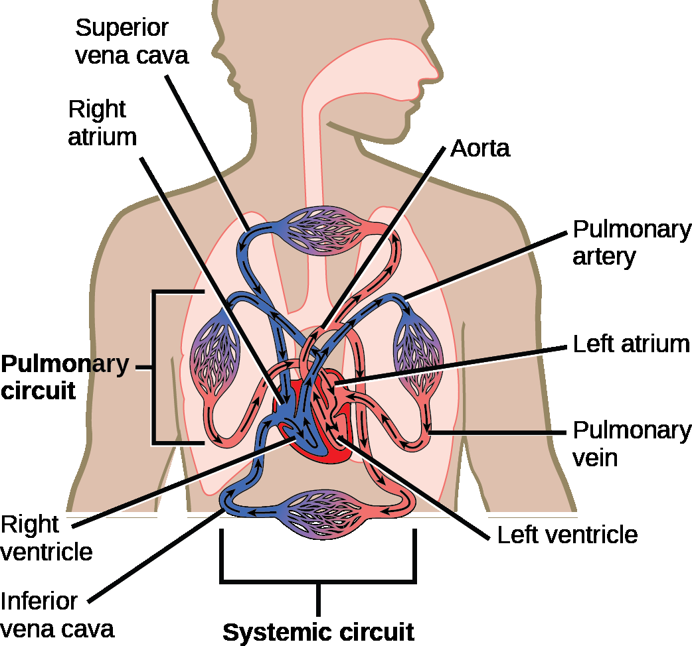
The pumping of the heart is a function of the cardiac muscle cells, or cardiomyocytes, that make up the heart muscle. Cardiomyocytes are distinctive muscle cells that are striated like skeletal muscle but pump rhythmically and involuntarily like smooth muscle; adjacent cells are connected by intercalated disks found only in cardiac muscle. These connections allow the electrical signal to travel directly to neighboring muscle cells.
The electrical impulses in the heart produce electrical currents that flow through the body and can be measured on the skin using electrodes. This information can be observed as an electrocardiogram (ECG) a recording of the electrical impulses of the cardiac muscle.
The blood from the heart is carried through the body by a complex network of blood vessels (Figure 16.12). Arteries take blood away from the heart. The main artery of the systemic circulation is the aorta; it branches into major arteries that take blood to different limbs and organs. The aorta and arteries near the heart have heavy but elastic walls that respond to and smooth out the pressure differences caused by the beating heart. Arteries farther away from the heart have more muscle tissue in their walls that can constrict to affect flow rates of blood. The major arteries diverge into minor arteries, and then smaller vessels called arterioles, to reach more deeply into the muscles and organs of the body.
Arterioles diverge into capillary beds. Capillary beds contain a large number, 10's to 100's of capillaries that branch among the cells of the body. Capillaries are narrow-diameter tubes that can fit single red blood cells and are the sites for the exchange of nutrients, waste, and oxygen with tissues at the cellular level. Fluid also leaks from the blood into the interstitial space from the capillaries. The capillaries converge again into venules that connect to minor veins that finally connect to major veins. Veins are blood vessels that bring blood high in carbon dioxide back to the heart. Veins are not as thick-walled as arteries, since pressure is lower, and they have valves along their length that prevent backflow of blood away from the heart. The major veins drain blood from the same organs and limbs that the major arteries supply.
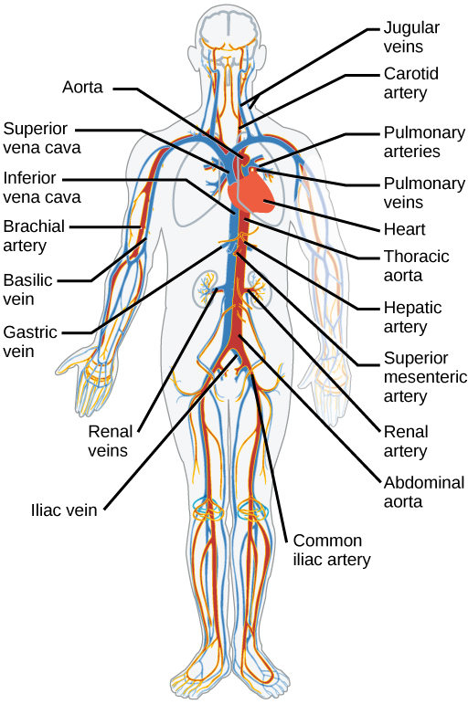
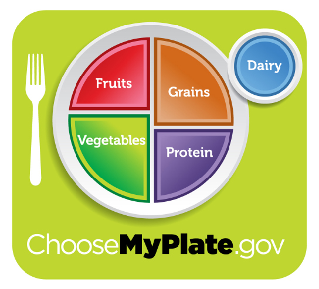
Describe the path of air from the nasal cavity to the alveoli and explain how gas exchange occurs. Then trace the flow of blood through the four chambers of the heart, distinguishing between pulmonary and systemic circulation. Include the roles of arteries, veins, and capillaries.
- List the different types of hormones and explain their roles in maintaining homeostasis
- Explain how hormones work
- Explain how hormone production is regulated
- Describe the role of different glands in the endocrine system
- Explain how the different glands work together to maintain homeostasis
The endocrine system produces hormones that function to control and regulate many different body processes. The endocrine system coordinates with the nervous system to control the functions of the other organ systems. Cells of the endocrine system produce molecular signals called hormones. These cells may compose endocrine glands, may be tissues or may be located in organs or tissues that have functions in addition to hormone production. Hormones circulate throughout the body and stimulate a response in cells that have receptors able to bind with them. The changes brought about in the receiving cells affect the functioning of the organ system to which they belong. Many of the hormones are secreted in response to signals from the nervous system, thus the two systems act in concert to effect changes in the body.
Maintaining homeostasis within the body requires the coordination of many different systems and organs. One mechanism of communication between neighboring cells, and between cells and tissues in distant parts of the body, occurs through the release of chemicals called hormones. Hormones are released into body fluids, usually blood, which carries them to their target cells where they elicit a response. The cells that secrete hormones are often located in specific organs, called endocrine glands, and the cells, tissues, and organs that secrete hormones make up the endocrine system. Examples of endocrine organs include the pancreas, which produces the hormones insulin and glucagon to regulate blood-glucose levels, the adrenal glands, which produce hormones such as epinephrine and norepinephrine that regulate responses to stress, and the thyroid gland, which produces thyroid hormones that regulate metabolic rates.
The endocrine glands differ from the exocrine glands. Exocrine glands secrete chemicals through ducts that lead outside the gland (not to the blood). For example, sweat produced by sweat glands is released into ducts that carry sweat to the surface of the skin. The pancreas has both endocrine and exocrine functions because besides releasing hormones into the blood. It also produces digestive juices, which are carried by ducts into the small intestine.
Hormones cause changes in target cells by binding to specific cell-surface or intracellular hormone receptors, molecules embedded in the cell membrane or floating in the cytoplasm with a binding site that matches a binding site on the hormone molecule. In this way, even though hormones circulate throughout the body and come into contact with many different cell types, they only affect cells that possess the necessary receptors. Receptors for a specific hormone may be found on or in many different cells or may be limited to a small number of specialized cells. For example, thyroid hormones act on many different tissue types, stimulating metabolic activity throughout the body. Cells can have many receptors for the same hormone but often also possess receptors for different types of hormones. The number of receptors that respond to a hormone determines the cell's sensitivity to that hormone, and the resulting cellular response. Additionally, the number of receptors available to respond to a hormone can change over time, resulting in increased or decreased cell sensitivity. In up-regulation, the number of receptors increases in response to rising hormone levels, making the cell more sensitive to the hormone and allowing for more cellular activity. When the number of receptors decreases in response to rising hormone levels, called down-regulation, cellular activity is reduced.
The endocrine glands secrete hormones into the surrounding interstitial fluid; those hormones then diffuse into blood and are carried to various organs and tissues within the body. The endocrine glands include the pituitary, thyroid, parathyroid, adrenal glands, gonads, pineal, and pancreas.
The pituitary gland, sometimes called the hypophysis, is located at the base of the brain (Figure 16.13a). It is attached to the hypothalamus. The posterior lobe stores and releases oxytocin and antidiuretic hormone produced by the hypothalamus. The anterior lobe responds to hormones produced by the hypothalamus by producing its own hormones, most of which regulate other hormone-producing glands.
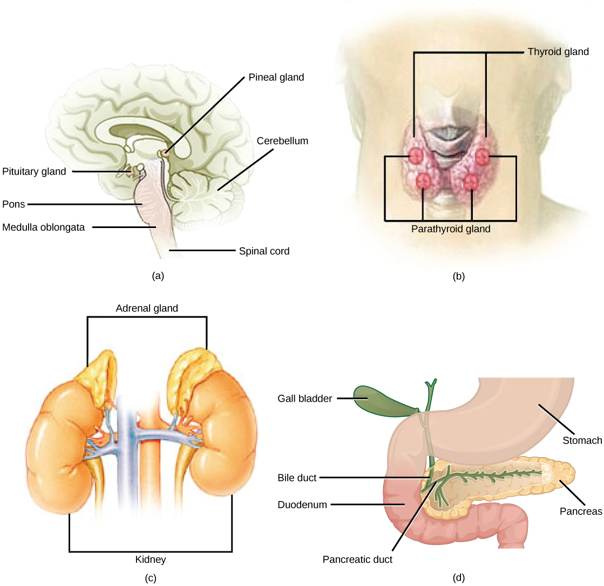
The anterior pituitary produces six hormones: growth hormone, prolactin, thyroid-stimulating hormone, adrenocorticotropic hormone, follicle-stimulating hormone, and luteinizing hormone. Growth hormone stimulates cellular activities like protein synthesis that promote growth. Prolactin stimulates the production of milk by the mammary glands. The other hormones produced by the anterior pituitary regulate the production of hormones by other endocrine tissues (Table 16.1). The posterior pituitary is significantly different in structure from the anterior pituitary. It is a part of the brain, extending down from the hypothalamus, and contains mostly nerve fibers that extend from the hypothalamus to the posterior pituitary.
The thyroid gland is located in the neck, just below the larynx and in front of the trachea (Figure 16.13b). It is a butterfly-shaped gland with two lobes that are connected. The thyroid follicle cells synthesize the hormone thyroxine, which is also known as T4 because it contains four atoms of iodine, and triiodothyronine, also known as T3 because it contains three atoms of iodine. T3 and T4 are released by the thyroid in response to thyroid-stimulating hormone produced by the anterior pituitary, and both T3 and T4 have the effect of stimulating metabolic activity in the body and increasing energy use. A third hormone, calcitonin, is also produced by the thyroid. Calcitonin is released in response to rising calcium ion concentrations in the blood and has the effect of reducing those levels.
Most people have four parathyroid glands; however, the number can vary from two to six. These glands are located on the posterior surface of the thyroid gland (Figure 16.13b).
The parathyroid glands produce parathyroid hormone. Parathyroid hormone increases blood calcium concentrations when calcium ion levels fall below normal.
The adrenal glands are located on top of each kidney (Figure 16.13c). The adrenal glands consist of an outer adrenal cortex and an inner adrenal medulla. These regions secrete different hormones.
The adrenal cortex produces mineralocorticoids, glucocorticoids, and androgens. The main mineralocorticoid is aldosterone, which regulates the concentration of ions in urine, sweat, and saliva. Aldosterone release from the adrenal cortex is stimulated by a decrease in blood concentrations of sodium ions, blood volume, or blood pressure, or by an increase in blood potassium levels. The glucocorticoids maintain proper blood-glucose levels between meals. They also control a response to stress by increasing glucose synthesis from fats and proteins and interact with epinephrine to cause vasoconstriction.
The testes and the adrenal cortex both secrete androgens, and the testes produce a larger amount that mostly drives development in a testicular reproductive system. When androgens are produced, some of them are later converted to estrogens. Androgens and estrogens resemble one another in chemical structure and originate from the same molecule. Minute amounts of estrogen occur in all humans through actions in adipose, brain, skin, and bone, which convert testosterone to estrogen. The small amount of androgens produced in the adrenal cortex may supplement hormones released from the gonads. The adrenal medulla contains two types of secretory cells: one that produces epinephrine (adrenaline) and another that produces norepinephrine (noradrenaline). Epinephrine and norepinephrine cause immediate, short-term changes in response to stressors, inducing the so-called fight-or-flight response. The responses include increased heart rate, breathing rate, cardiac muscle contractions, and blood-glucose levels. They also accelerate the breakdown of glucose in skeletal muscles and stored fats in adipose tissue, and redirect blood flow toward skeletal muscles and away from skin and viscera. The release of epinephrine and norepinephrine is stimulated by neural impulses from the sympathetic nervous system that originate from the hypothalamus.
The pancreas is an elongated organ located between the stomach and the proximal portion of the small intestine (Figure 16.13d). It contains both exocrine cells that excrete digestive enzymes and endocrine cells that release hormones.
The endocrine cells of the pancreas form clusters called pancreatic islets or the islets of Langerhans. Among the cell types in each pancreatic islet are the alpha cells, which produce the hormone glucagon, and the beta cells, which produce the hormone insulin. These hormones regulate blood-glucose levels. Alpha cells release glucagon as blood-glucose levels decline. When blood-glucose levels rise, beta cells release insulin. Glucagon causes the release of glucose to the blood from the liver, and insulin facilitates the uptake of glucose by the body's cells.
The gonads—the testes and ovaries—produce steroid hormones. The testes produce androgens, testosterone being the most prominent, which trigger the production of sperm cells, growth and development of the testes and penis, increased skeletal and muscular growth, enlargement of the larynx, and increased growth and redistribution of body hair. The ovaries produce estrogen and progesterone, which, during puberty, cause the increased development of breast tissue, redistribution of fat towards hips, legs, and breast, the maturation of the uterus and vagina, and regulate the production of eggs. If pregnancy occurs, these hormones manage and prepare the body systems for carrying and birthing the offspring.
There are several organs whose primary functions are non-endocrine but that also possess endocrine functions. These include the heart, kidneys, intestines, thymus, and adipose tissue. The heart has endocrine cells in the walls of the atria that release a hormone in response to increased blood volume. It causes a reduction in blood volume and blood pressure, and reduces the concentration of Na+ in the blood.
The gastrointestinal tract produces several hormones that aid in digestion. The endocrine cells are located in the mucosa of the GI tract throughout the stomach and small intestine. They trigger the release of gastric juices, which help to break down and digest food in the GI tract.
The kidneys also possess endocrine function. Two of these hormones regulate ion concentrations and blood volume or pressure. Erythropoietin (EPO) is released by kidneys in response to low oxygen levels. EPO triggers the formation of red blood cells in the bone marrow. EPO has been used by athletes to improve performance. But EPO doping has its risks, since it thickens the blood and increases strain on the heart; it also increases the risk of blood clots and therefore heart attacks and stroke.
The thymus is found behind the sternum. The thymus produces hormones referred to as thymosins, which contribute to the development of the immune response in infants. Adipose tissue, or fat tissue, produces the hormone leptin in response to food intake. Leptin produces a feeling of satiety after eating, reducing the urge for further eating.
Hormone production and release are primarily controlled by negative feedback, as described in the discussion on homeostasis. In this way, the concentration of hormones in blood is maintained within a narrow range. For example, the anterior pituitary signals the thyroid to release thyroid hormones. Increasing levels of these hormones in the blood then give feedback to the hypothalamus and anterior pituitary to inhibit further signaling to the thyroid gland (Figure 16.14).
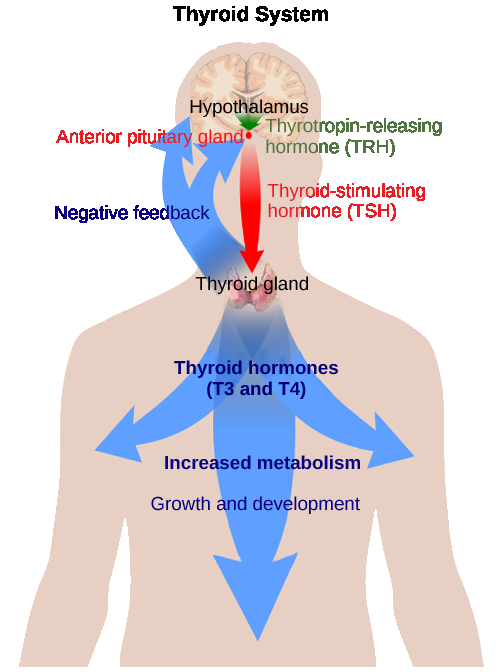
Goiter, a disease caused by iodine deficiency, results in the inability of the thyroid gland to form T3 and T4. The body typically attempts to compensate by producing greater amounts of TSH. Which of the following symptoms would you expect goiter to cause?
a. Hypothyroidism, resulting in weight gain, cold sensitivity, and reduced mental activity.
b. Hyperthyroidism, resulting in weight loss, profuse sweating, and increased heart rate.
c. Hyperthyroidism, resulting in weight gain, cold sensitivity, and reduced mental activity.
d. Hypothyroidism, resulting in weight loss, profuse sweating, and increased heart rate.
Explain the difference between endocrine and exocrine glands. Describe how hormones cause changes in target cells through receptor binding and how up-regulation and down-regulation affect cell sensitivity. Explain how negative feedback controls hormone production, using the thyroid gland as an example.
- Discuss the axial and appendicular parts of the skeletal system
- Explain the role of joints in skeletal movement
- Explain the role of muscles in locomotion
The muscular and skeletal systems provide support to the body and allow for movement. The bones of the skeleton protect the body's internal organs and support the weight of the body. The muscles of the muscular system contract and pull on the bones, allowing for movements as diverse as standing, walking, running, and grasping items.
Injury or disease affecting the musculoskeletal system can be very debilitating. The most common musculoskeletal diseases worldwide are caused by malnutrition, which can negatively affect development and maintenance of bones and muscles. Other diseases affect the joints, such as arthritis, which can make movement difficult and, in advanced cases, completely impair mobility.
Progress in the science of prosthesis design has resulted in the development of artificial joints, with joint replacement surgery in the hips and knees being the most common. Replacement joints for shoulders, elbows, and fingers are also available.
The human skeleton is an endoskeleton that consists of 206 bones in the adult. An endoskeleton develops within the body rather than outside like the exoskeleton of insects. The skeleton has five main functions: providing support to the body, storing minerals and lipids, producing blood cells, protecting internal organs, and allowing for movement. The skeletal system in vertebrates is divided into the axial skeleton (which consists of the skull, vertebral column, and rib cage), and the appendicular skeleton (which consists of limb bones, the pectoral or shoulder girdle, and the pelvic girdle).
The axial skeleton forms the central axis of the body and includes the bones of the skull, ossicles of the middle ear, hyoid bone of the throat, vertebral column, and the thoracic cage (rib cage) (Figure 16.15).
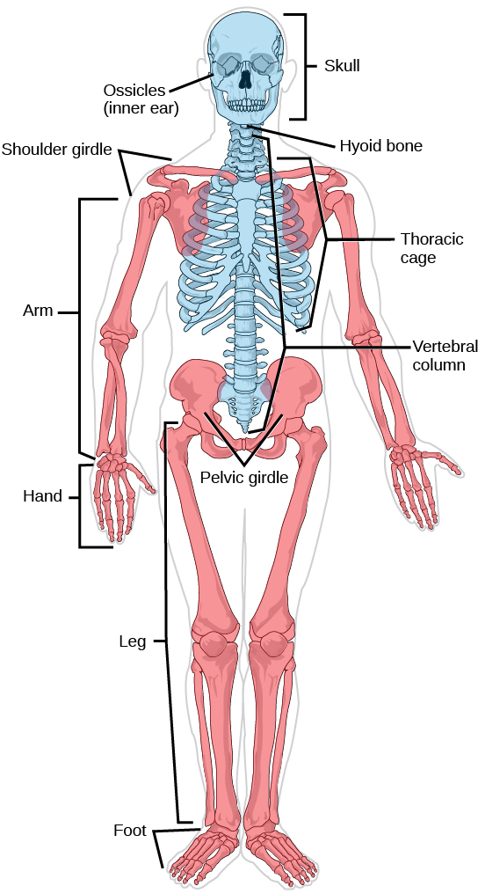
The bones of the skull support the structures of the face and protect the brain. The skull consists of cranial bones and facial bones. The cranial bones form the cranial cavity, which encloses the brain and serves as an attachment site for muscles of the head and neck. In the adult they are tightly jointed with connective tissue and adjoining bones do not move.
The auditory ossicles of the middle ear transmit sounds from the air as vibrations to the fluid-filled cochlea. The auditory ossicles consist of two malleus (hammer) bones, two incus (anvil) bones, and two stapes (stirrups), one on each side. Facial bones provide cavities for the sense organs (eyes, mouth, and nose), and serve as attachment points for facial muscles.
The hyoid bone lies below the mandible in the front of the neck. It acts as a movable base for the tongue and is connected to muscles of the jaw, larynx, and tongue. The mandible forms a joint with the base of the skull. The mandible controls the opening to the mouth and hence, the airway and gut.
The vertebral column, or spinal column, surrounds and protects the spinal cord, supports the head, and acts as an attachment point for ribs and muscles of the back and neck. It consists of 26 bones: the 24 vertebrae, the sacrum, and the coccyx. Each vertebral body has a large hole in the center through which the spinal cord passes down to the level of the first lumbar vertebra. Below this level, the hole contains spinal nerves which exit between the vertebrae. There is a notch on each side of the hole through which the spinal nerves, can exit from the spinal cord to serve different regions of the body. The vertebral column is approximately 70 cm (28 in) in adults and is curved, which can be seen from a side view.
Intervertebral discs composed of fibrous cartilage lie between adjacent vertebrae from the second cervical vertebra to the sacrum. Each disc helps form a slightly moveable joint and acts as a cushion to absorb shocks from movements such as walking and running.
The thoracic cage, also known as the rib cage consists of the ribs, sternum, thoracic vertebrae, and costal cartilages. The thoracic cage encloses and protects the organs of the thoracic cavity including the heart and lungs. It also provides support for the shoulder girdles and upper limbs and serves as the attachment point for the diaphragm, muscles of the back, chest, neck, and shoulders. Changes in the volume of the thorax enable breathing. The sternum, or breastbone, is a long flat bone located at the anterior of the chest. Like the skull, it is formed from many bones in the embryo, which fuse in the adult. The ribs are 12 pairs of long curved bones that attach to the thoracic vertebrae and curve toward the front of the body, forming the ribcage. Costal cartilages connect the anterior ends of most ribs to the sternum.
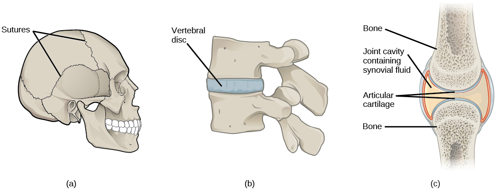
The appendicular skeleton is composed of the bones of the upper and lower limbs. It also includes the pectoral, or shoulder girdle, which attaches the upper limbs to the body, and the pelvic girdle, which attaches the lower limbs to the body (Figure 16.15).
The pectoral girdle bones transfer force generated by muscles acting on the upper limb to the thorax. It consists of the clavicles (or collarbones) in the anterior, and the scapulae (or shoulder blades) in the posterior.
The upper limb contains bones of the arm (shoulder to elbow), the forearm, and the hand. The humerus is the largest and longest bone of the upper limb. It forms a joint with the shoulder and with the forearm at the elbow. The forearm extends from the elbow to the wrist and consists of two bones. The hand includes the bones of the wrist, the palm, and the bones of the fingers.
The pelvic girdle attaches to the lower limbs of the axial skeleton. Since it is responsible for bearing the weight of the body and for locomotion, the pelvic girdle is securely attached to the axial skeleton by strong ligaments. It also has deep sockets with robust ligaments that securely attach to the femur. The pelvic girdle is mainly composed of two large hip bones. The hip bones join together in the anterior of the body at a joint called the pubic symphysis and with the bones of the sacrum at the posterior of the body.
The lower limb consists of the thigh, the leg, and the foot. The bones of the lower limbs are thicker and stronger than the bones of the upper limbs to support the entire weight of the body and the forces from locomotion. The femur, or thighbone, is the longest, heaviest, and strongest bone in the body. The femur and pelvis form the hip joint. At its other end, the femur, along with the shinbone and kneecap, form the knee joint.
The point at which two or more bones meet is called a joint, or articulation. Joints are responsible for movement, such as the movement of limbs, and stability, such as the stability found in the bones of the skull.
There are two ways to classify joints: based on their structure or based on their function. The structural classification divides joints into fibrous, cartilaginous, and synovial joints depending on the material composing the joint and the presence or absence of a cavity in the joint. The bones of fibrous joints are held together by fibrous connective tissue. There is no cavity, or space, present between the bones, so most fibrous joints do not move at all, or are only capable of minor movements. The joints between the bones in the skull and between the teeth and the bone of their sockets are examples of fibrous joints (Figure 16.16a).
Cartilaginous joints are joints in which the bones are connected by cartilage (Figure 16.16b). An example is found at the joints between vertebrae, the so-called "disks" of the backbone. Cartilaginous joints allow for very little movement.
Synovial joints are the only joints that have a space between the adjoining bones (Figure 16.16c). This space is referred to as the joint cavity and is filled with fluid. The fluid lubricates the joint, reducing friction between the bones and allowing for greater movement. The ends of the bones are covered with cartilage and the entire joint is surrounded by a capsule. Synovial joints are capable of the greatest movement of the joint types. Knees, elbows, and shoulders are examples of synovial joints.
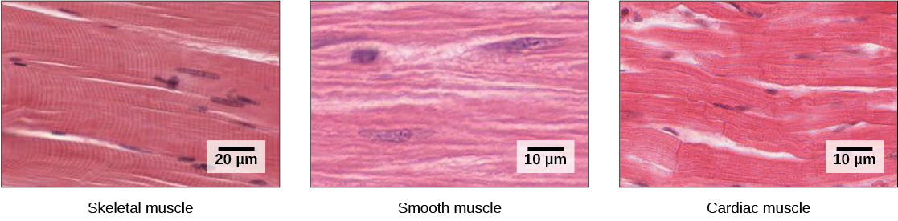
The wide range of movement allowed by synovial joints produces different types of movements. Angular movements are produced when the angle between the bones of a joint changes. Flexion, or bending, occurs when the angle between the bones decreases. Moving the forearm upward at the elbow is an example of flexion. Extension is the opposite of flexion in that the angle between the bones of a joint increases. Rotational movement is the movement of a bone as it rotates around its own longitudinal axis. Movement of the head as in saying "no" is an example of rotation.
Muscles allow for movement such as walking, and they also facilitate bodily processes such as respiration and digestion. The body contains three types of muscle tissue: skeletal muscle, cardiac muscle, and smooth muscle (Figure 16.17).

Skeletal muscle tissue forms skeletal muscles, which attach to bones and sometimes the skin and control locomotion and any other movement that can be consciously controlled. Because it can be controlled intentionally, skeletal muscle is also called voluntary muscle. When viewed under a microscope, skeletal muscle tissue has a striped or striated appearance. This appearance results from the arrangement of the proteins inside the cell that are responsible for contraction. The cells of skeletal muscle are long and tapered and have multiple nuclei on the periphery of each cell.
Smooth muscle tissue occurs in the walls of hollow organs such as the intestines, stomach, and urinary bladder, and around passages such as in the respiratory tract and blood vessels. Smooth muscle has no striations, is not under voluntary control, and is called involuntary muscle. Smooth muscle cells have a single nucleus.
Cardiac muscle tissue is only found in the heart. The contractions of cardiac muscle tissue pump blood throughout the body and maintain blood pressure. Like skeletal muscle, cardiac muscle is striated, but unlike skeletal muscle, cardiac muscle cannot be consciously controlled and is called involuntary muscle. The cells of cardiac muscle tissue are connected to each other through intercalated disks and usually have just one nucleus per cell.
Each skeletal muscle fiber is a skeletal muscle cell. Within each muscle fiber are myofibrils, long cylindrical structures that lie parallel to the muscle fiber. Myofibrils run the entire length of the muscle fiber. They attach to the plasma membrane, called the sarcolemma, at their ends, so that as myofibrils shorten, the entire muscle cell contracts (Figure 16.18).
The striated appearance of skeletal muscle tissue is a result of repeating bands of the proteins actin and myosin that occur along the length of myofibrils.
Myofibrils are composed of smaller structures called myofilaments. There are two main types of myofilaments: thick filaments and thin filaments. Thick filaments are composed of the protein myosin. The primary component of thin filaments is the protein actin.
The thick and thin filaments alternate with each other in a structure called a sarcomere. The sarcomere is the unit of contraction in a muscle cell. Contraction is stimulated by an electrochemical signal from a nerve cell associated with the muscle fiber. For a muscle cell to contract, the sarcomere must shorten. However, thick and thin filaments do not shorten. Instead, they slide by one another, causing the sarcomere to shorten while the filaments remain the same length. The sliding is accomplished when a molecular extension of myosin, called the myosin head, temporarily binds to an actin filament next to it and through a change in conformation, bends, dragging the two filaments in opposite directions. The myosin head then releases its actin filament, relaxes, and then repeats the process, dragging the two filaments further along each other. The combined activity of many binding sites and repeated movements within the sarcomere causes it to contract. The coordinated contractions of many sarcomeres in a myofibril leads to contraction of the entire muscle cell and ultimately the muscle itself. The movement of the myosin head requires ATP, which provides the energy for the contraction.
Compare the axial and appendicular skeletons, listing the major components of each. Describe the three types of joints (fibrous, cartilaginous, synovial) and give an example of each. Explain how the sliding filament model accounts for muscle contraction at the sarcomere level.
- Describe the form and function of a neuron
- Describe the basic parts and functions of the central nervous system
- Describe the basic parts and functions of the peripheral nervous system
As you read this, your nervous system is performing several functions simultaneously. The visual system is processing what is seen on the page; the motor system controls your eye movements and the turn of the pages (or click of the mouse); the prefrontal cortex maintains attention. Even fundamental functions, like breathing and regulation of body temperature, are controlled by the nervous system. The nervous system is one of two systems that exert control over all the organ systems of the body; the other is the endocrine system. The nervous system's control is much more specific and rapid than the hormonal system. It communicates signals through cells and the tiny gaps between them rather than through the circulatory system as in the endocrine system. It uses a combination of chemical and electrochemical signals, rather than purely chemical signals used by the endocrine system to cover long distances quickly. The nervous system acquires information from sensory organs, processes it and then may initiate a response either through motor function, leading to movement, or in a change in the organism's physiological state.
Nervous systems throughout the animal kingdom vary in structure and complexity. Some organisms, like sea sponges, lack a true nervous system. Others, like jellyfish, lack a true brain and instead have a system of separate but connected nerve cells (neurons) called a "nerve net." Flatworms have both a central nervous system (CNS), made up of a ganglion (clusters of connected neurons) and two nerve cords, and a peripheral nervous system (PNS) containing a system of nerves that extend throughout the body. The insect nervous system is more complex but also fairly decentralized. It contains a brain, ventral nerve cord, and ganglia. These ganglia can control movements and behaviors without input from the brain.
Compared to invertebrates, vertebrate nervous systems are more complex, centralized, and specialized. While there is great diversity among different vertebrate nervous systems, they all share a basic structure: a CNS that contains a brain and spinal cord and a PNS made up of peripheral sensory and motor nerves. One interesting difference between the nervous systems of invertebrates and vertebrates is that the nerve cords of many invertebrates are located ventrally (toward the stomach) whereas the vertebrate spinal cords are located dorsally (toward the back). There is debate among evolutionary biologists as to whether these different nervous system plans evolved separately or whether the invertebrate body plan arrangement somehow "flipped" during the evolution of vertebrates.
The nervous system is made up of neurons, specialized cells that can receive and transmit chemical or electrical signals, and glia, cells that provide support functions for the neurons. There is great diversity in the types of neurons and glia that are present in different parts of the nervous system.
The nervous system of the common laboratory fly, Drosophila melanogaster, contains around 100,000 neurons, the same number as a lobster. This number compares to 75 million in the mouse and 300 million in the octopus. A human brain contains around 86 billion neurons. Despite these very different numbers, the nervous systems of these animals control many of the same behaviors—from basic reflexes to more complicated behaviors like finding food and courting mates. The ability of neurons to communicate with each other as well as with other types of cells underlies all of these behaviors.
Most neurons share the same cellular components. But neurons are also highly specialized—different types of neurons have different sizes and shapes that relate to their functional roles.
Like other cells, each neuron has a cell body (or soma) that contains a nucleus, smooth and rough endoplasmic reticulum, Golgi apparatus, mitochondria, and other cellular components. Neurons also contain unique structures for receiving and sending the electrical signals that make communication between neurons possible (Figure 16.19). Dendrites are tree-like structures that extend away from the cell body to receive messages from other neurons at specialized junctions called synapses. Although some neurons do not have any dendrites, most have one or many dendrites.
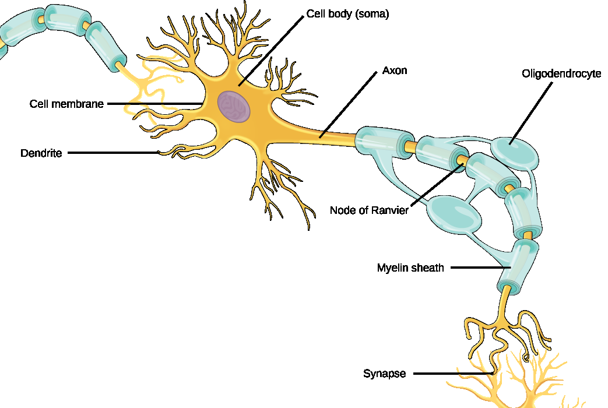
The bilayer lipid membrane that surrounds a neuron is impermeable to ions. To enter or exit the neuron, ions must pass through ion channels that span the membrane. Some ion channels need to be activated to open and allow ions to pass into or out of the cell. These ion channels are sensitive to the environment and can change their shape accordingly. Ion channels that change their structure in response to voltage changes are called voltage-gated ion channels. The difference in total charge between the inside and outside of the cell is called the membrane potential. A neuron at rest is negatively charged: the inside of a cell is approximately 70 millivolts more negative than the outside (–70 mV). This voltage is called the resting membrane potential; it is caused by differences in the concentrations of ions inside and outside the cell and the selective permeability created by ion channels. Sodium-potassium pumps in the membrane produce the different ion concentrations inside and outside of the cell by bringing in two K+ ions and removing three Na+ ions. The actions of this pump are costly: one molecule of ATP is used up for each turn. Up to 50 percent of a neuron's ATP is used in maintaining its membrane resting potential. Potassium ions (K+), which are higher inside the cell, move fairly freely out of the neuron through potassium channels; this loss of positive charge produces a net negative charge inside the cell. Sodium ions (Na+), which are low inside, have a driving force to enter but move less freely. Their channels are voltage dependent and will open when a slight change in the membrane potential triggers them.
A neuron can receive input from other neurons and, if this input is strong enough, send the signal to downstream neurons. Transmission of a signal between neurons is generally carried by a chemical, called a neurotransmitter, which diffuses from the axon of one neuron to the dendrite of a second neuron. When neurotransmitter molecules bind to receptors located on a neuron's dendrites, the neurotransmitter opens ion channels in the dendrite's plasma membrane. This opening allows sodium ions to enter the neuron and results in depolarization of the membrane—a decrease in the voltage across the neuron membrane. Once a signal is received by the dendrite, it then travels passively to the cell body. A large enough signal from neurotransmitters will reach the axon. If it is strong enough (that is, if the threshold of excitation, a depolarization to around –60mV is reached), then depolarization creates a positive feedback loop: as more Na+ ions enter the cell, the axon becomes further depolarized, opening even more sodium channels at further distances from the cell body. This will cause voltage dependent Na+ channels further down the axon to open and more positive ions to enter the cell. In the axon, this "signal" will become a self-propagating brief reversal of the resting membrane potential called an action potential.
An action potential is an all-or-nothing event; it either happens or it does not. The threshold of excitation must be reached for the neuron to "fire" an action potential. As sodium ions rush into the cell, depolarization actually reverses the charge across the membrane form -70mv to +30mV. This change in the membrane potential causes voltage-gated K+ channels to open, and K+ begins to leave the cell, repolarizing it. At the same time, Na+ channels inactivate so no more Na+ enters the cell. K+ ions continue to leave the cell and the membrane potential returns to the resting potential. At the resting potential, the K+ channels close and Na+ channels reset. The depolarization of the membrane proceeds in a wave down the length of the axon. It travels in only one direction because the sodium channels have been inactivated and unavailable until the membrane potential is near the resting potential again; at this point they are reset to closed and can be opened again.
An axon is a tube-like structure that propagates the signal from the cell body to specialized endings called axon terminals. These terminals in turn then synapse with other neurons, muscle, or target organs. When the action potential reaches the axon terminal, this causes the release of neurotransmitter onto the dendrite of another neuron. Neurotransmitters released at axon terminals allow signals to be communicated to these other cells, and the process begins again. Neurons usually have one or two axons, but some neurons do not contain any axons.
Some axons are covered with a special structure called a myelin sheath, which acts as an insulator to keep the electrical signal from dissipating as it travels down the axon. This insulation is important, as the axon from a human motor neuron can be as long as a meter (3.2 ft)—from the base of the spine to the toes. The myelin sheath is produced by glial cells. Along the axon there are periodic gaps in the myelin sheath. These gaps are called nodes of Ranvier and are sites where the signal is "recharged" as it travels along the axon.
It is important to note that a single neuron does not act alone—neuronal communication depends on the connections that neurons make with one another (as well as with other cells, like muscle cells). Dendrites from a single neuron may receive synaptic contact from many other neurons. For example, dendrites from a Purkinje cell in the cerebellum are thought to receive contact from as many as 200,000 other neurons.
While glial cells are often thought of as the supporting cast of the nervous system, the number of glial cells in the brain actually outnumbers the number of neurons by a factor of 10. Neurons would be unable to function without the vital roles that are fulfilled by these glial cells. Glia guide developing neurons to their destinations, buffer ions and chemicals that would otherwise harm neurons, and provide myelin sheaths around axons. When glia do not function properly, the result can be disastrous—most brain tumors are caused by mutations in glia.
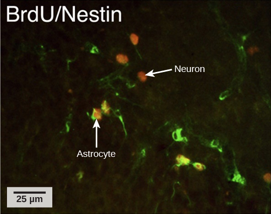
All functions performed by the nervous system—from a simple motor reflex to more advanced functions like making a memory or a decision—require neurons to communicate with one another. Neurons communicate between the axon of one neuron and the dendrites, and sometimes the cell body, of another neuron across the gap between them, known as the synaptic cleft. When an action potential reaches the end of an axon it stimulates the release of neurotransmitter molecules into the synaptic cleft between the synaptic knob of the axon and the post-synaptic membrane of the dendrite or soma of the next cell. The neurotransmitter is released through exocytosis of vesicles containing the neurotransmitter molecules. The neurotransmitter diffuses across the synaptic cleft and binds to receptors in the post-synaptic membrane. These receptor molecules are chemically regulated ion channels and will open, allowing sodium to enter the cell. If sufficient neurotransmitter has been released an action potential may be initiated in the next cell, but this is not guaranteed. If insufficient neurotransmitter is released the nerve signal will die at this point. There are a number of different neurotransmitters that are specific to neuron types that have specific functions.
The central nervous system (CNS) is made up of the brain and spinal cord and is covered with three layers of protective coverings called meninges ("meninges" is derived from the Greek and means "membranes") (Figure 16.21). The outermost layer is the dura mater, the middle layer is the web-like arachnoid mater, and the inner layer is the pia mater, which directly contacts and covers the brain and spinal cord. The space between the arachnoid and pia maters is filled with cerebrospinal fluid (CSF). The brain floats in CSF, which acts as a cushion and shock absorber.
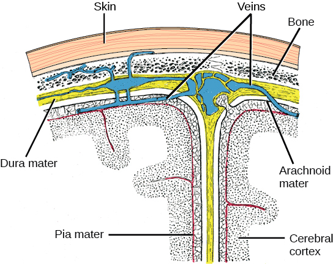
The brain is the part of the central nervous system that is contained in the cranial cavity of the skull. It includes the cerebral cortex, limbic system, basal ganglia, thalamus, hypothalamus, cerebellum, brainstem, and retinas. The outermost part of the brain is a thick piece of nervous system tissue called the cerebral cortex. The cerebral cortex, limbic system, and basal ganglia make up the two cerebral hemispheres. A thick fiber bundle called the corpus callosum (corpus = "body"; callosum = "tough") connects the two hemispheres. Although there are some brain functions that are localized more to one hemisphere than the other, the functions of the two hemispheres are largely redundant. In fact, sometimes (very rarely) an entire hemisphere is removed to treat severe epilepsy. While patients do suffer some deficits following the surgery, they can have surprisingly few problems, especially when the surgery is performed on children who have very immature nervous systems.
In other surgeries to treat severe epilepsy, the corpus callosum is cut instead of removing an entire hemisphere. This causes a condition called split-brain, which gives insights into unique functions of the two hemispheres. For example, when an object is presented to patients' left visual field, they may be unable to verbally name the object (and may claim to not have seen an object at all). This is because the visual input from the left visual field crosses and enters the right hemisphere and cannot then signal to the speech center, which generally is found in the left side of the brain. Remarkably, if a split-brain patient is asked to pick up a specific object out of a group of objects with the left hand, the patient will be able to do so but will still be unable to verbally identify it.
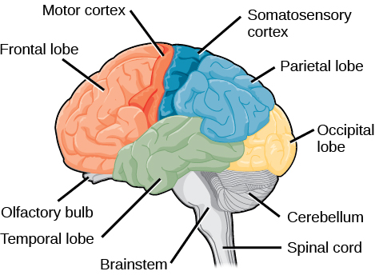
Each hemisphere contains regions called lobes that are involved in different functions. Each hemisphere of the mammalian cerebral cortex can be broken down into four functionally and spatially defined lobes: frontal, parietal, temporal, and occipital (Figure 16.22).
The frontal lobe is located at the front of the brain, over the eyes. This lobe contains the olfactory bulb, which processes smells. The frontal lobe also contains the motor cortex, which is important for planning and implementing movement. Areas within the motor cortex map to different muscle groups. Neurons in the frontal lobe also control cognitive functions like maintaining attention, speech, and decision-making. Studies of humans who have damaged their frontal lobes show that parts of this area are involved in personality, socialization, and assessing risk. The parietal lobe is located at the top of the brain. Neurons in the parietal lobe are involved in speech and also reading. Two of the parietal lobe's main functions are processing somatosensation—touch sensations like pressure, pain, heat, cold—and processing proprioception—the sense of how parts of the body are oriented in space. The parietal lobe contains a somatosensory map of the body similar to the motor cortex. The occipital lobe is located at the back of the brain. It is primarily involved in vision—seeing, recognizing, and identifying the visual world. The temporal lobe is located at the base of the brain and is primarily involved in processing and interpreting sounds. It also contains the hippocampus (named from the Greek for "seahorse," which it resembles in shape) a structure that processes memory formation. The role of the hippocampus in memory was partially determined by studying one famous epileptic patient, HM, who had both sides of his hippocampus removed in an attempt to cure his epilepsy. His seizures went away, but he could no longer form new memories (although he could remember some facts from before his surgery and could learn new motor tasks).
Interconnected brain areas called the basal ganglia play important roles in movement control and posture. The basal ganglia also regulate motivation.
The thalamus acts as a gateway to and from the cortex. It receives sensory and motor inputs from the body and also receives feedback from the cortex. This feedback mechanism can modulate conscious awareness of sensory and motor inputs depending on the attention and arousal state of the animal. The thalamus helps regulate consciousness, arousal, and sleep states.
Below the thalamus is the hypothalamus. The hypothalamus controls the endocrine system by sending signals to the pituitary gland. Among other functions, the hypothalamus is the body's thermostat—it makes sure the body temperature is kept at appropriate levels. Neurons within the hypothalamus also regulate circadian rhythms, sometimes called sleep cycles.
The limbic system is a connected set of structures that regulates emotion, as well as behaviors related to fear and motivation. It plays a role in memory formation and includes parts of the thalamus and hypothalamus as well as the hippocampus. One important structure within the limbic system is a temporal lobe structure called the amygdala. The two amygdala (one on each side) are important both for the sensation of fear and for recognizing fearful faces.
The cerebellum (cerebellum = "little brain") sits at the base of the brain on top of the brainstem. The cerebellum controls balance and aids in coordinating movement and learning new motor tasks. The cerebellum of birds is large compared to other vertebrates because of the coordination required by flight.
The brainstem connects the rest of the brain with the spinal cord and regulates some of the most important and basic functions of the nervous system including breathing, swallowing, digestion, sleeping, walking, and sensory and motor information integration.
Connecting to the brainstem and extending down the body through the spinal column is the spinal cord. The spinal cord is a thick bundle of nerve tissue that carries information about the body to the brain and from the brain to the body. The spinal cord is contained within the meninges and the bones of the vertebral column but is able to communicate signals to and from the body through its connections with spinal nerves (part of the peripheral nervous system). A cross-section of the spinal cord looks like a white oval containing a gray butterfly-shape (Figure 16.23). Axons make up the "white matter" and neuron and glia cell bodies (and interneurons) make up the "gray matter." Axons and cell bodies in the dorsa spinal cord convey mostly sensory information from the body to the brain. Axons and cell bodies in the spinal cord primarily transmit signals controlling movement from the brain to the body.
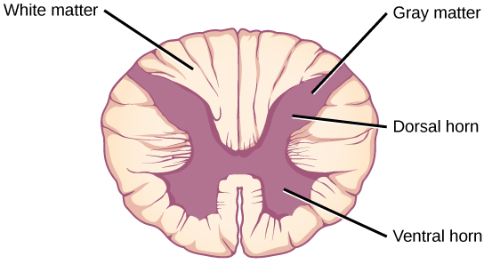
The spinal cord also controls motor reflexes. These reflexes are quick, unconscious movements—like automatically removing a hand from a hot object. Reflexes are so fast because they involve local synaptic connections. For example, the knee reflex that a doctor tests during a routine physical is controlled by a single synapse between a sensory neuron and a motor neuron. While a reflex may only require the involvement of one or two synapses, synapses with interneurons in the spinal column transmit information to the brain to convey what happened (the knee jerked, or the hand was hot).
The peripheral nervous system (PNS) is the connection between the central nervous system and the rest of the body. The PNS can be broken down into the autonomic nervous system, which controls bodily functions without conscious control, and the sensory-somatic nervous system, which transmits sensory information from the skin, muscles, and sensory organs to the CNS and sends motor commands from the CNS to the muscles.
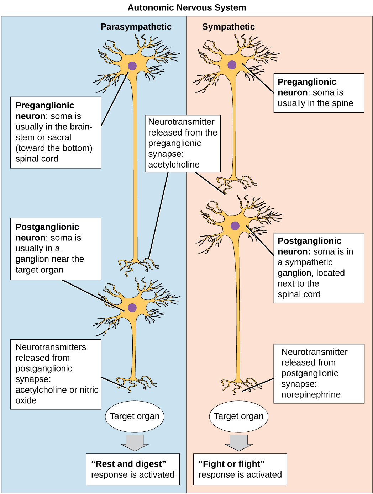
The autonomic nervous system serves as the relay between the CNS and the internal organs. It controls the lungs, the heart, smooth muscle, and exocrine and endocrine glands. The autonomic nervous system controls these organs largely without conscious control; it can continuously monitor the conditions of these different systems and implement changes as needed. Signaling to the target tissue usually involves two synapses: a preganglionic neuron (originating in the CNS) synapses to a neuron in a ganglion that, in turn, synapses on the target organ (Figure 16.24). There are two divisions of the autonomic nervous system that often have opposing effects: the sympathetic nervous system and the parasympathetic nervous system.
The sympathetic nervous system is responsible for the immediate responses an animal makes when it encounters a dangerous situation. One way to remember this is to think of the "fight-or-flight" response a person feels when encountering a snake ("snake" and "sympathetic" both begin with "s"). Examples of functions controlled by the sympathetic nervous system include an accelerated heart rate and inhibited digestion. These functions help prepare an organism's body for the physical strain required to escape a potentially dangerous situation or to fend off a predator.
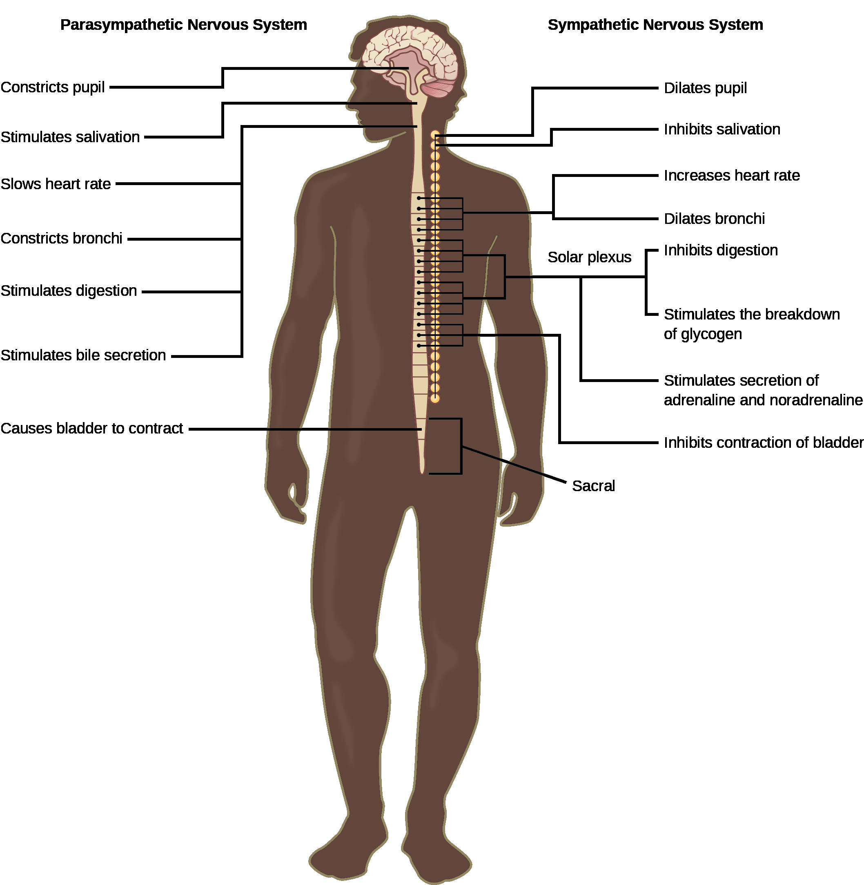
While the sympathetic nervous system is activated in stressful situations, the parasympathetic nervous system allows an animal to "rest and digest." One way to remember this is to think that during a restful situation like a picnic, the parasympathetic nervous system is in control ("picnic" and "parasympathetic" both start with "p"). Parasympathetic preganglionic neurons have cell bodies located in the brainstem and in the sacral (toward the bottom) spinal cord (Figure 16.25). The parasympathetic nervous system resets organ function after the sympathetic nervous system is activated including slowing of heart rate, lowered blood pressure, and stimulation of digestion.
The sensory-somatic nervous system is made up of cranial and spinal nerves and contains both sensory and motor neurons. Sensory neurons transmit sensory information from the skin, skeletal muscle, and sensory organs to the CNS. Motor neurons transmit messages about desired movement from the CNS to the muscles to make them contract. Without its sensory-somatic nervous system, an animal would be unable to process any information about its environment (what it sees, feels, hears, and so on) and could not control motor movements. Unlike the autonomic nervous system, which usually has two synapses between the CNS and the target organ, sensory and motor neurons usually have only one synapse—one ending of the neuron is at the organ and the other directly contacts a CNS neuron.
Describe the structure of a neuron, including the roles of dendrites, cell body, and axon. Explain how an action potential is generated and propagated along an axon. Compare and contrast the sympathetic and parasympathetic divisions of the autonomic nervous system.
- Homeostasis and Osmoregulation (set point, thermoregulation, ectotherms/endotherms, kidneys, nephrons) — CB 16.1
- Digestive System (oral cavity, esophagus, stomach, small/large intestine, accessory organs, nutrition) — CB 16.2
- Circulatory and Respiratory Systems (lungs, alveoli, heart chambers, cardiac cycle, blood vessels) — CB 16.3
- Endocrine System (hormones, pituitary, thyroid, adrenals, pancreas, feedback mechanisms) — CB 16.4
- Musculoskeletal System (axial/appendicular skeleton, joints, skeletal/smooth/cardiac muscle, sarcomere) — CB 16.5
- Nervous System (neurons, action potentials, synapses, CNS, PNS, sympathetic/parasympathetic) — CB 16.6